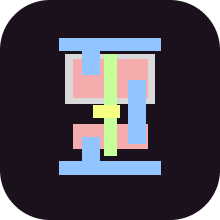
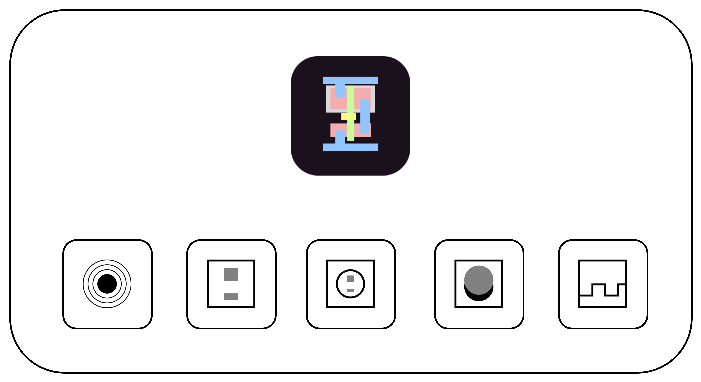

Auto-OPS: A Framework For Automated Optical Probing Simulation on GDS-II
In computer security, Intellectual Property (IP) leakage can be performed by Side-Channel Analysis (SCA) attacks on modern chips.
A side-channel attack refers to a security breach which allows the attacker to collect information by measuring indirect impacts of the system or its hardware, rather than directly targeting the program or its code. These SCA attacks and their countermeasures have been studied in literature.
However, in recent years, Optical Probing Attack (OPA), has emerged as a non-invasive and laser-based SCA attack through the backside of chips. OPA can retrieve the chip’s IP by reading out the transistors’ terminal voltage.
Nevertheless, in the literature, there are some countermeasures to mitigate OPA, which are too expensive to implement because they require a significant change in the fabrication process. These existing methods require a whole redesign of logic cells layout, characterization, synthesis, and place and route techniques which can be quite challenging.
Warning
This documentation is a work in progress. We are actively writing it, but if there are things you’d like to be documented in priority, feel free to request in on the GitHub Repo.
The Auto-OPS project
{kind=link}
Nowadays, doing some optical probing demonstration are laborious and costly.
The Auto-OPS project is a graphical interface which was developed to provide an easy to use and complete tool to perform optical probing simulation.
Auto-OPS is created to be fast with a low ressources consumption.